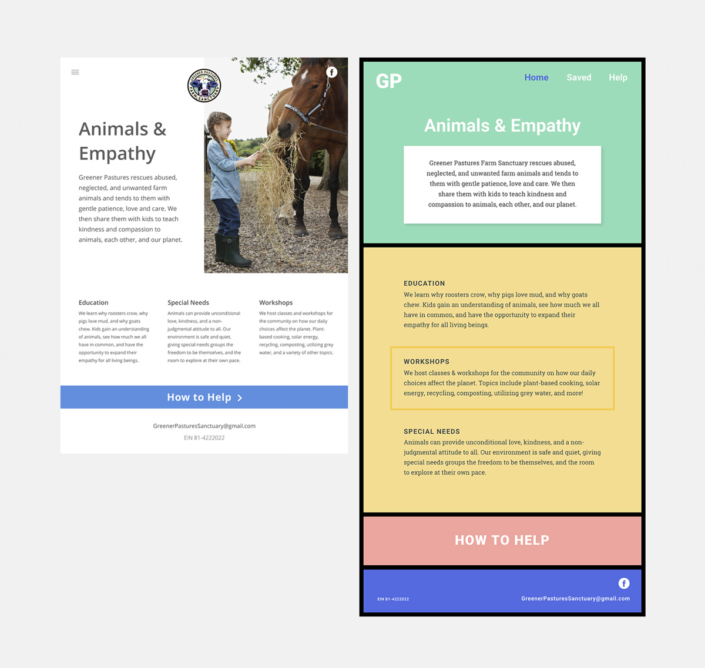
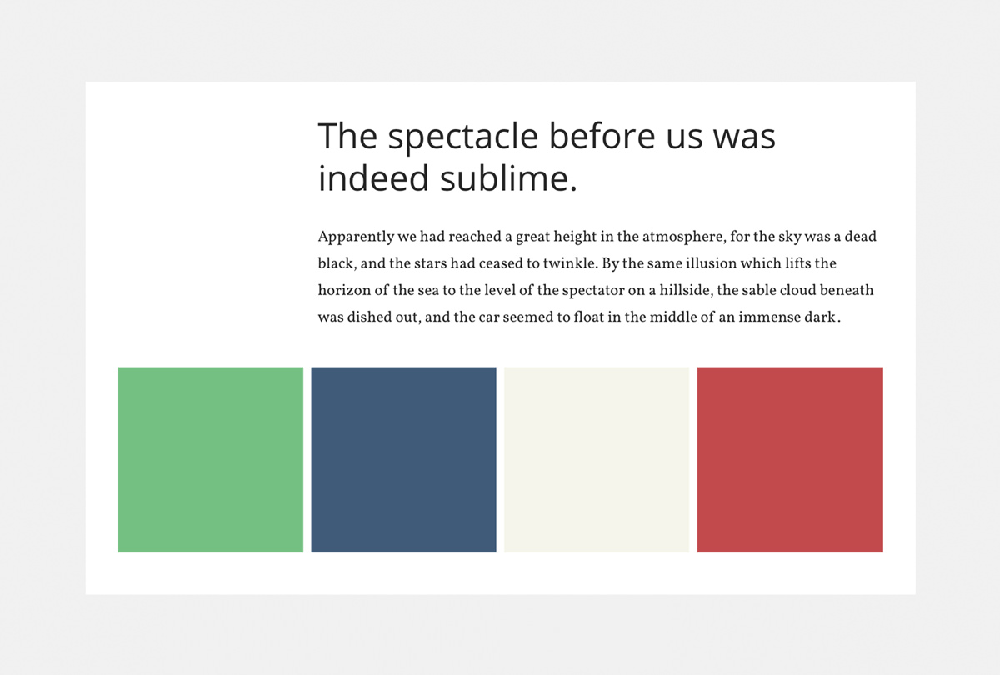
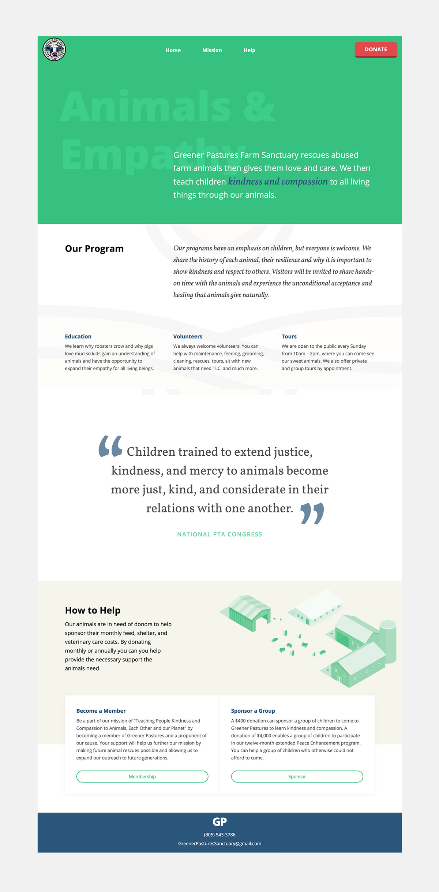

Greener Pastures Farm Sanctuary is a nonprofit organization in San Luis Obispo. They rescue abused, neglected, and unwanted farm animals and give them a loving place to live on their farm. They then teach children love and kindness through the animals.
This was a passion project of mine to experiment designing a website without using any photographs and only use typography to encourage website visitors to donate or get involved.
I began with the two comprehensive's below, then got feedback from the target market of Greener Pastures. Most users felt like a combination of both with toned down colors would be the one they preferred. Each comp had multiple pages but I found that users preferred a single page so they found all of the information they needed in one place.
Their current website is on the dark side and contains a lot of text so my goal was to brighten up the color palette and reduce the amount of text. For the new colors, I wanted to use a green hue to reflect the name and use more natural/neutral colors to reflect the farm feeling. You can’t eliminate all of the text because most of it was critical to Greener Pasture’s message; so I decided to use Open Sans paired with pops of Vollkorn to break up the text and guide readers down the page while still getting all of the critical information.
After testing the comps with different users, I redesigned the original comps. I used a toned down color palette of the second comp to give it a farm feeling, yet I still wanted to keep site modern looking. By using white space, sections, and typography I was able to use the natural colors while still giving the site an overall modern touch.
See the site → Greener Pastures Farm Sanctuary
